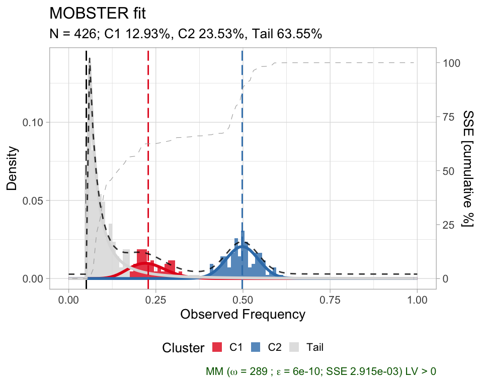
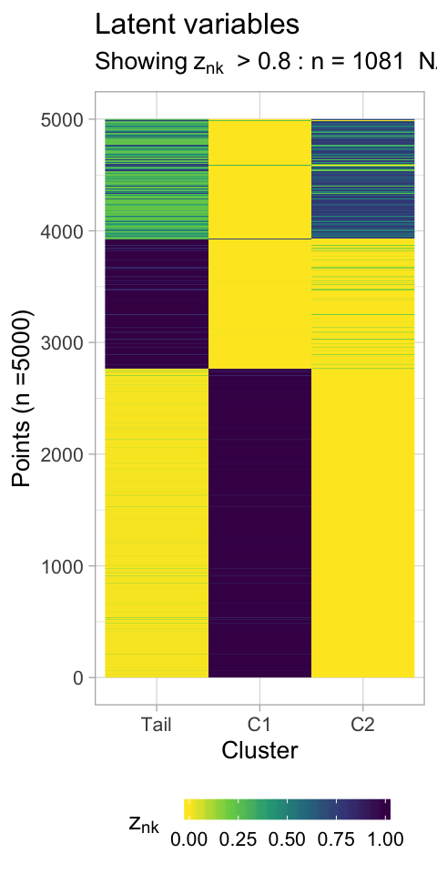
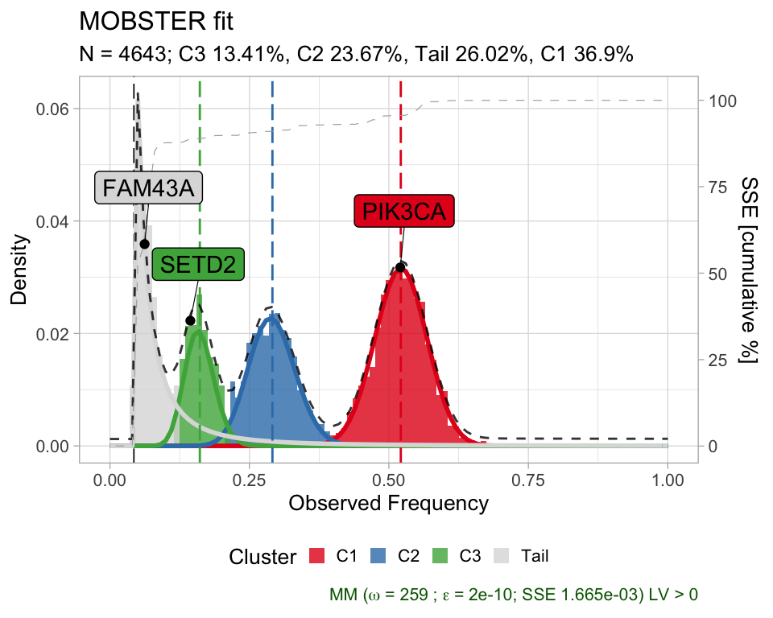
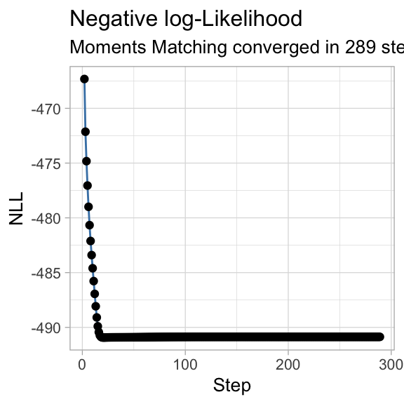
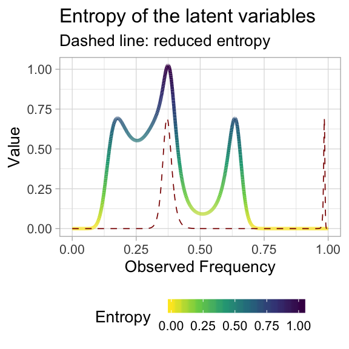
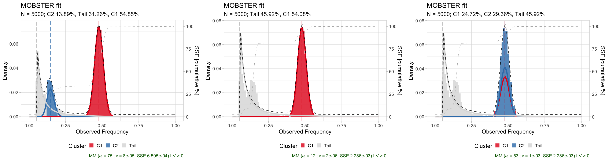
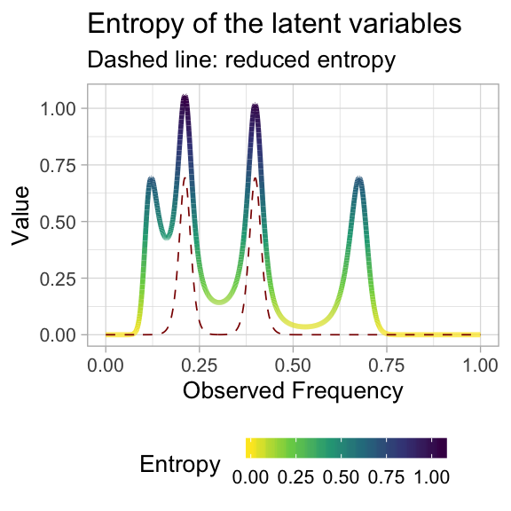
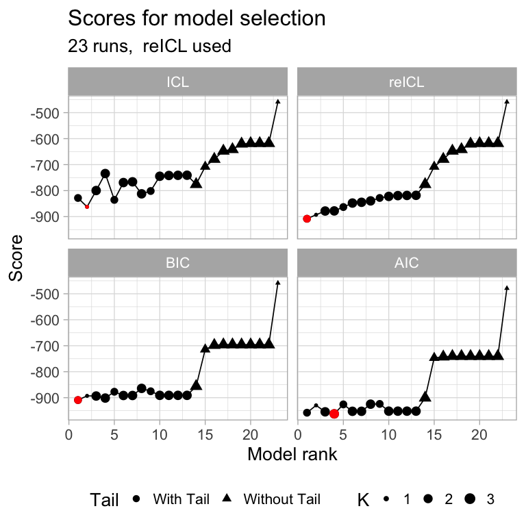

plotting.RmdThis vignette describes the plotting functions available in MOBSTER.
# We load the fit available inside the package
data('fit_example', package = 'mobster')
# Print and plot the model
print(fit_example$best)
#> ── [ MOBSTER ] My MOBSTER model n = 5000 with k = 2 Beta(s) and a tail ────────────────────────────────────────────────
#> ● Clusters: π = 55% [C1], 31% [Tail] and 14% [C2], with π > 0.
#> ● Tail [n = 1370, 31%] with alpha = 1.2.
#> ● Beta C1 [n = 2784, 55%] with mean = 0.48.
#> ● Beta C2 [n = 846, 14%] with mean = 0.15.
#> ℹ Score(s): NLL = -5671.5; ICL = -10359.09 (-11266.35), H = 907.26 (0). Fit converged by MM in 75 steps.
plot(fit_example$best)
You can plot mutations annotated if the x% of probability mass in their maximum responsibility (hard clustering) is below a certain cutoff. Non-assigned mutations are

You can plot the barplot of the mixing proportions, using the same colour scheme for the fit (here, default).

The negative log-likelihood of the fit can be plot against the iteration steps, so to check the the trend is decreasing.

A contributor to the NLL is the entropy of the mixture, which can be visualized along with the reduced entropy, which is used by reICL.

Alternative models are returned function mobster_fit, and can be easly visualized.
require(ggpubr)
# Figure assembly
figure = ggarrange(
plot(fit_example$runs[[1]]),
plot(fit_example$runs[[2]]),
plot(fit_example$runs[[3]]),
ncol = 3, nrow = 1
)
print(figure) The table reportin the scores can be visualised, and everal plots are available to inspect model selection.
print(fit_example$fits.table)
#> NLL BIC AIC entropy ICL reduced.entropy
#> 5 -5671.504 -11266.353 -11325.008 907.2581 -10359.095 8.466073e-11
#> 1 -5332.989 -10614.876 -10653.979 323.0130 -10291.863 0.000000e+00
#> 2 -5332.968 -10589.280 -10647.935 2186.1915 -8403.089 1.903207e+03
#> 4 -4442.905 -8834.707 -8873.810 544.0481 -8290.658 5.440481e+02
#> 3 -1570.709 -3115.867 -3135.419 0.0000 -3115.867 0.000000e+00
#> reICL size K tail
#> 5 -11266.353 9 2 TRUE
#> 1 -10614.876 6 1 TRUE
#> 2 -8686.073 9 2 TRUE
#> 4 -8290.658 6 2 FALSE
#> 3 -3115.867 3 1 FALSEOne can plot of the sum of squared error (SSE) between the fit density and the data (binned with bins of size 0.01), for several solutions at once. This measure can represent a sort of goodness of fit statistics.

The scores can also be compared graphically. Running plot_fit_scores all the computed scoring functions (BIC, AIC, ICL and reICL) are shown, which helps understanding if the best model with the default score (reICL) is the best also according to the other scores. In this graphics the red dot represents the best model according to each score.

These functions can be all wrapped by a call to plot_model_selection which plots the above summary statistics and the fits for each one of a set of top models (change the parameter TOP to select how many plots should be computed).